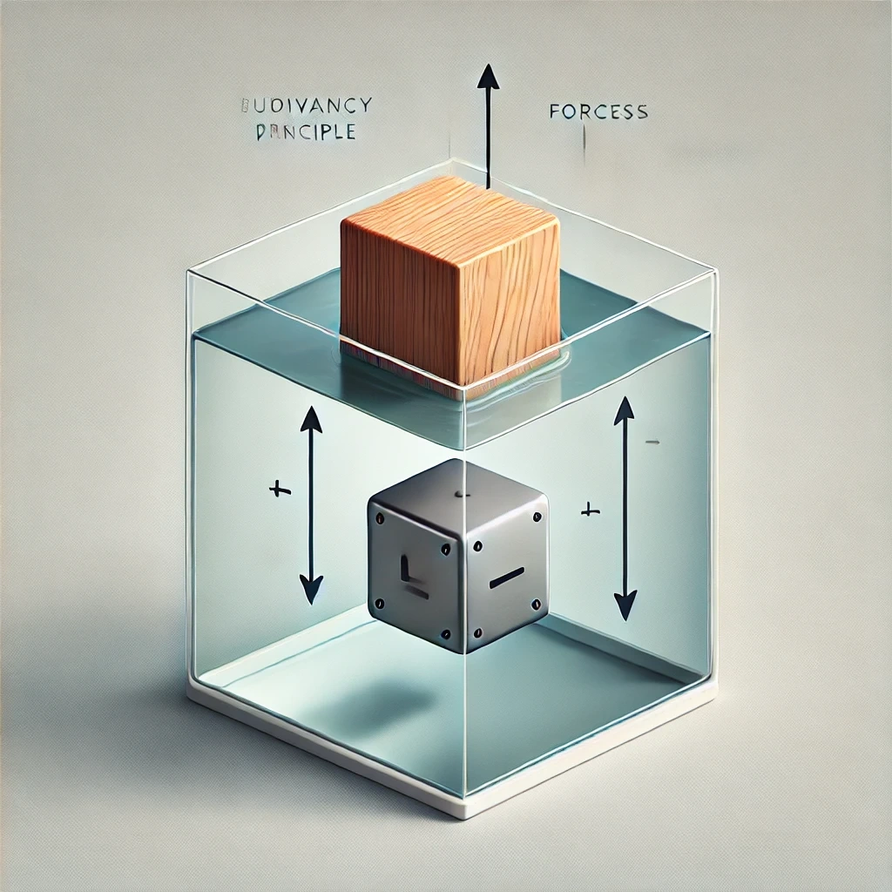
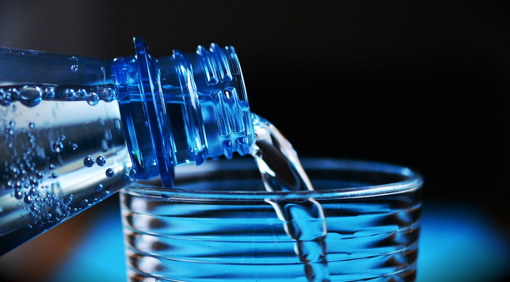
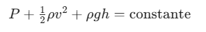

Principio de Pascal
El Principio de Pascal, formulado por Blaise Pascal, establece que:
"La presión ejercida sobre un fluido incomprensible y confinado se transmite de manera uniforme en todas las direcciones y a todos los puntos del fluido y de las paredes del recipiente que lo contiene."
Aplicaciones del Principio de Pascal:
Prensas hidráulicas: Dispositivos utilizados para multiplicar la fuerza en tareas como levantar automóviles (gato hidráulico).
Frenos hidráulicos: Sistemas que permiten la transmisión de fuerza en los vehículos.
Máquinas hidráulicas: Herramientas industriales que utilizan este principio para cortar, doblar o compactar materiales.
Formula:
PAG= F/A
PAG: Presión
F: Fuerza Aplicada
A: Area Sobre la que se aplica la fuerza
Principio de Arquímedes

El Principio de Arquímedes, propuesto por el matemático griego Arquímedes, establece que:
"Todo cuerpo sumergido total o parcialmente en un fluido experimenta una fuerza de empuje hacia arriba igual al peso del fluido desalojado por el cuerpo."
Principio de Bernoulli

El principio de Bernoulli establece que en un fluido ideal (sin viscosidad ni fricción) que fluye a lo largo de una línea de corriente, la suma de la energía cinética, la energía potencial y la energía de presión es constante. En términos más simples, cuando la velocidad de un fluido aumenta, su presión disminuye, y viceversa.
La ecuación de Bernoulli se expresa matemáticamente como:

Donde:
( P ) es la presión del fluido.
( ρ) es la densidad del fluido.
( v ) es la velocidad del fluido.
( g ) es la aceleración debida a la gravedad.
( h ) es la altura del fluido con respecto a un nivel de referencia
Aplicación
El principio de Bernoulli tiene numerosas aplicaciones prácticas, entre las cuales se incluyen:
Aerodinámica: En el diseño de alas de aviones, donde la forma del ala crea diferencias de velocidad y presión que generan sustentación1
Medidores de flujo: Como el tubo de Venturi y el tubo de Pitot, que se utilizan para medir la velocidad del flujo de fluidos2
Atomizadores: En dispositivos como pulverizadores de perfume y latas de aerosol, donde la disminución de presión ayuda a atomizar el líquido2
Hidrodinámica: En el diseño de sistemas de tuberías y canales para asegurar un flujo eficiente de líquidos.